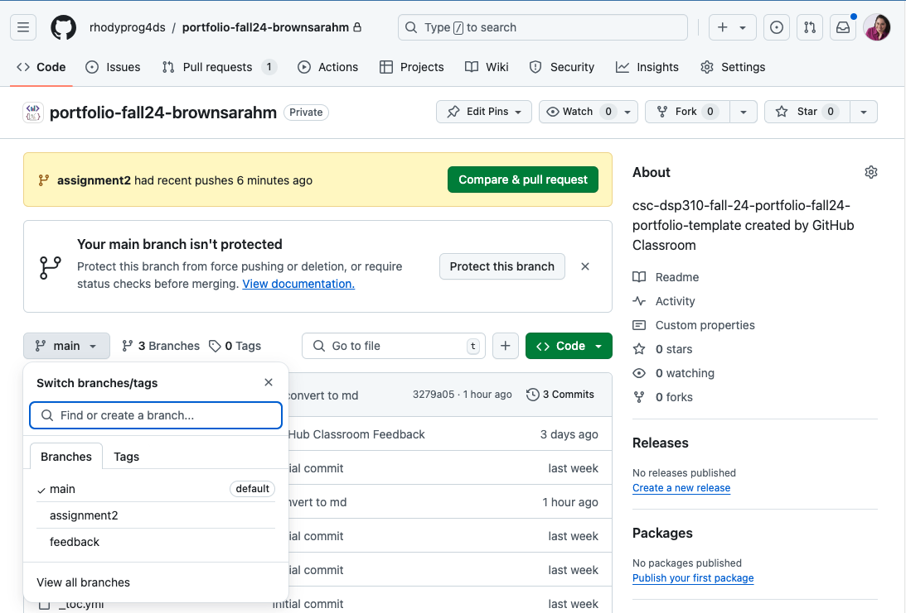

2. Assignment 2: Practicing Python and Accessing Data#
2.1. Deadline#
2024-09-19 end of day
However, if you upload an attempt and specific questions on time and then attend office hours on 9/20 then any revisions made based on our conversation will count as on time
2.2. Submission and Template#
Complete your work on the assignment2 branch in your portfolio, a template file for datasets.py is located there, as well as the data folder with two files.
In your repo you can see a menu on the left hand side of the page, select assignment2 from the list and work from there.

2.3. Objective & Evaluation#
This assignment is an opportunity to earn level 1 and 2 achievements in python and access and begin working toward level 1 for summarize. You can also earn level 1 for process.
Eligible skills: (links to checklists)
process level 1
python level 1 or 2
access level 1
summarize level 1
The goal of this assignment is for you to practice
finding datasets
getting familiar with different critieria we describe datasets with
practice loading data
practice getting basic facts about a dataset
manipulating dictionaries do do things efficiently
writing pythonic loops
creating your own DataFrame from other Python objects
saving a dataframe to csv (preview for cleaning)
These are all important skills that help you prepare to think in the right way to do more typical data analyses starting with assignment 3.
2.5. Store info about data for loading#
Find 3 datasets of interest to you that are provided in at least two different file formats. Choose datasets that are not too big, so that they do not take more than a few second to load. At least one dataset, must have non numerical (eg string or boolean) data in at least 1 column.
Important
So that we can use this in class next week, this part is due early
Create a list of dictionaries in file called datasets.py, so that there is one dictionary for each dataset. Each dictionary should have the following keys:
|
the full url of the dataset |
|
a short name |
|
(the actual function handle) what function should be used to load the data into a |
Hint
See below for how you will use the dictionary as help for how you should construct it
2.6. Analyze Your Datasets#
Do the following in a notebook called loading_data.ipynb.
2.6.1. Document your data#
In your notebook, create a markdown cell for each dataset that includes:
heading 2 with the dataset’s name
a 1-2 sentence summary of what the dataset contains and why it was collected
a “more info” link to where someone can learn about the dataset
2-3 questions you would like to answer with that dataset in a bulleted (
-) or numbered list
Hint
markdown links are written like: [text to show](url/to/go/to)
2.6.2. Make a dataset about your datasets#
In a notebook called dataset_of_datasets.ipynb, import the list of dictionaries from the datasets module you created in the step above.
Then iterate over the list of dictionaries, and:
load each dataset like
dataset_dict['load_function'](dataset_dict['url'])save it to a local csv using the short name you provided for the dataset as the file name, without writing the index column to the file.
record attributes about the dataset as in the table below in a list or dictionary of lists
Use that to create a DataFrame with columns that match the rows of the following table.
name |
a short name for the dataset |
source |
a url to where you found the data |
num_rows |
number of rows in the dataset |
num_columns |
number of columns in the dataset |
num_numerical |
number of numerical variables in the dataset |
2.6.3. Explore Your Datasets#
Create a second notebook file called exploration.ipynb:
For one dataset that includes nonnumerical data:
read it in from your local csv using a relative path
display the heading and the first 4 rows
make a numpy array of only the numerical data and save it to a new variable (select these programmatically)
was the format that the data was provided in a good format? why or why not?
For any other dataset:
read it in from your local csv using a relative path
display the heading with the last 3 rows
display the pandas datatype for each column
Are there any variables where pandas may have read in the data as a datatype that’s not what you expect (eg a numerical column mistaken for strings)? If so, investigate and try to figure out why.
For the third dataset:
read it in from your local csv using a relative path
save every third row (3,6,9,…) of the data for two columns of your choice into a new DataFrame and display that
2.6.4. Exploring data files#
There are two files in the data folder, both can be read in with read_csv but need some options or fixing.
try to read in the
german.datafile, what happens with the default settings? What option do you need to use to make it look right?try to read in the
.csvfile that’s included in the template repository, use the error messages you get to try to fix the file manually (any text editor, including jupyter can edit a.csv), making notes about what changes you made in a markdown cell.
Hint
For the csv file in the template’s data folder, in Jupyter Lab, it will not let you edit a .csv file, but you can chagne the file name to txt (in your code too) and then it will work.
2.7. Tips and hints#
2.7.1. the goal#
I am not looking for “an answer”
You should not be either
I am looking for evidence that you understand the material (thus far including prereqs)
You should be trying to understand material
Review all of the methods the DataFrame has
This means that in office hours, I am going to:
ask you questions to help you think about the problem and the material
help direct your attention to the right part of the error message to figure out what is wrong
dtypeshows you the type of each column read morethere is also a select dtypes method
2.8. Thinking ahead#
Important
This section is not required, but is intended to help you get started thinking about how you could extend this assignment. If you complete it, we’ll give your feedback to help shape your ideas to get to level 3 achievements. If you want to focus only on level 2 at this moment in time, feel free to skip this part. You could also think about these after submitting the assignment. If you want, you could discuss these ideas in office hours.
When might you prefer one datatype over another?
How does PEP 8 standard code help you be collaborative?
Learn about Datasheets for Datasets and find some examples, (eg this google scholar result ) How could something like this impact your work as a data scientist?